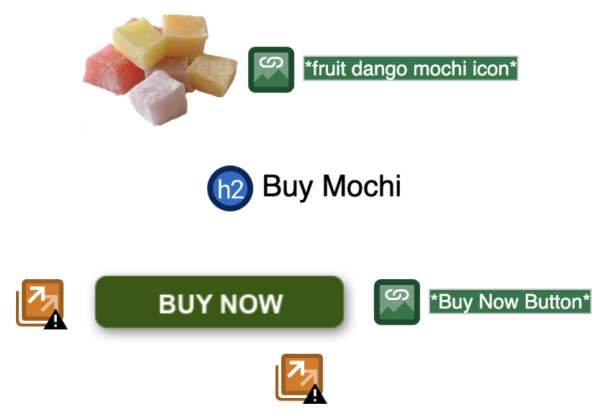
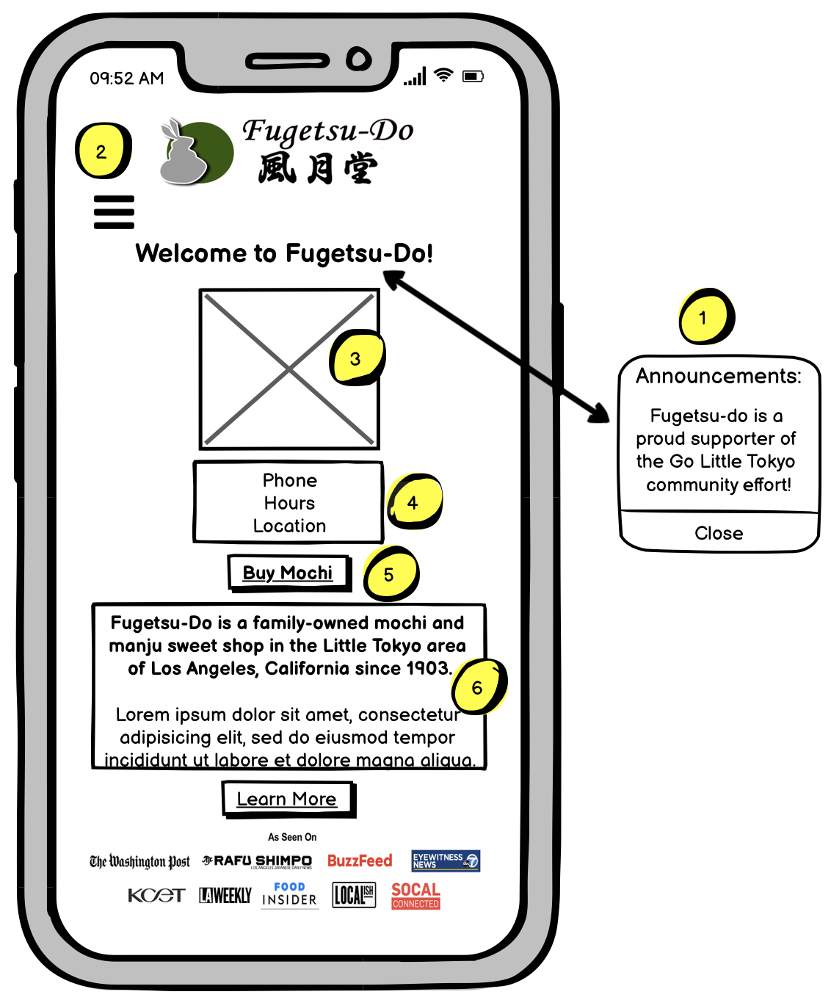
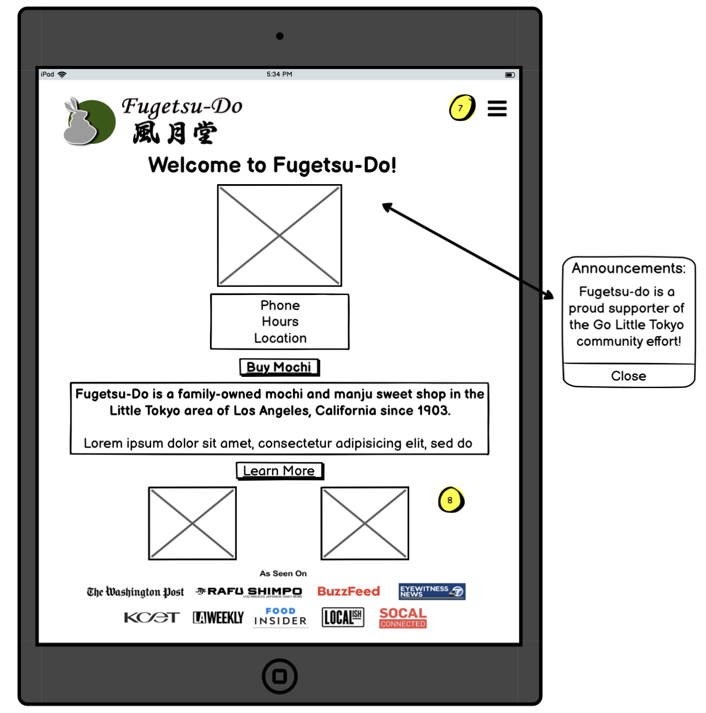
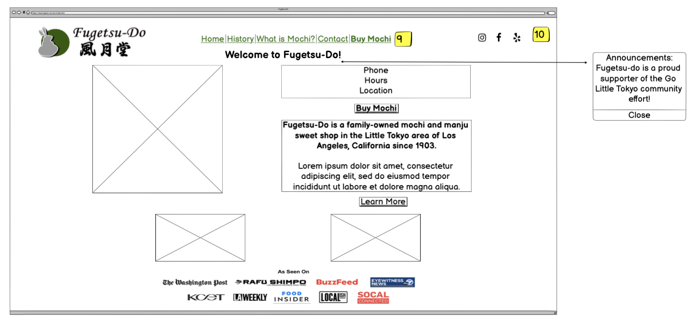
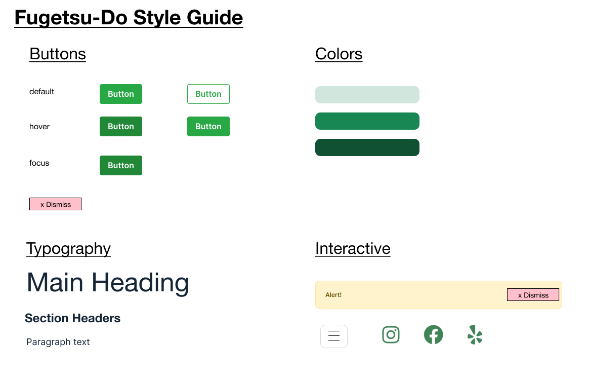

Project Introduction
Context and Problem: In this assignment, I chose a simple website to redesign. I focused on finding usability, learnability, memorability, and accessibility problems
with the site, and considered ways in which to improve upon them. For my website, I chose to redesign the homepage for my local mochi shop called Fugetsu-Do.
Fugetsu-Do is the oldest Japanese American owned business in the US and is still family-run to this day; one look at their website and you can tell they specialize in mochi making, not UI/UX design!
Research and Feedback: A better quality homepage benefits both the business and customer. These two groups may have different goals and desires, but share a common love for mochi.
Conclusion: Through considering the usability, learnability, memorability, and accessibility of my redesigned website, I learned the need to
consider different user personas when creating a website. Its important to understand that a website must be usable for both new browsers and frequent visitors.
Here is Fugetsu-Do's current website, and here is my redesigned website.
Part 1: Identifying Usability Problems
Below is a screenshot of Fugetsu-Do's original site:

I identified several usability problems:
Usability/Efficiency
- Home image of mochi takes up too much of the screen
- Unclear that the navbar are links
- Several large images on page, whole page takes a while to load
Learnability
- Not easy to quickly access store location and hours
- Footer holds important information, but is too far down to reference
Memorability
- Too much text makes it hard to pick up key words
- Lack of hierarchy; headers are undersized and all text written in same format
Accessiblity
There were a few accessibility concerns with the page. WAVE detected a lot of duplicate links, which upon further investigation, I deemed as being a non-issue because they actually improved the user experience. Below, we see that the image, “Buy Mochi” text, and “Buy Now” button all redirect the user to the same ordering page. As the page already lacks a clear hierarchy, having three links ensures that the user can click on whichever element fits into their user model of an external link.

Part 2: Visual Redesign
Low-fidelity Wireframing
Mobile

1. Usability/Efficiency: The announcement was quite far down on the original site. Assuming the announcement is something temporary (related to Covid-19), adding it in as a pop-up would be effective in grabbing the user’s attention, and letting them move on from it.
2. Memorability: Both logo and title are significantly larger.
3. Usability/Efficiency: Images can unnecessarily lengthen a website that could be fit into a singular screen, which was the case for Fugetsu-Do's. A smaller image allows one to see the whole picture without scrolling, and have it in the peripherals as one reads the website information.
4.Learnability: This grouping together of key information improves the learnability of the page.
5. Usability/Efficiency + Learnability: Situated right below key store information is the second reason individuals visit the site: to order mochi. This is bolded to emphasize that this redirects the user to a page that may behave differently (i.e. external ordering page vs. reference page).
6. Learnability: The description is shortened. In the original site, there exist columns with heavy text titled “Buy Mochi”, “What is Mochi”, “Our History”. The first is taken care of with the “Buy Mochi” button above; a description can be included on the Buy Mochi page itself. “Our History” is already a menu tab, so there is no need to display that. Thus, the “Learn More” page directs the user to the “What is Fugetsu-Do Mochi” page.
Tablet

7. Learnability: A wider screen allows us to move the menu to the top right, creating a scannable, horizontal frame with the logo.
8. Memorability: With more screen real estate, we can incorporate the two images we left off in the mobile version. Images of Fugetsu-Do's offerings are important to display not only for advertising reasons, but also to help the user remember what Fugetsu-Do has to offer.
Desktop

9. Memorability: A wider page enables the menu bar to be expanded. It is much clearer that the following is a navigation bar that contains links to other pages. The “buy” button is emphasized, implying that it holds a different purpose than the other links (reference pages vs. ordering page), which is consistent with the bolded “Buy Mochi” button embedded within the page. Essentially, the original Fugetsu-Do footer and header are consolidated into a cleaner header.
10. Learnability: Social media links are displayed at the top.
Visual Design Style Guide

High-Fidelity Prototyping
How to Implement
The High-Fidelity prototypes above can be implemented using Bootstrap.
Bootstrap utilizes rows and columns to structure the body of the page.
Viewing the prototypes, one can clearly see "layers" within the page, each of which represents a row.
This form of grouping allows the reader to scan the page easily and identify the purpose of each content chunk.
At small screen sizes, the navbar collpases into a menu. When the menu is clicked on, this should expand and list out the same navbar links, as well as social media icons.
When the site is resized to be larger, the two most drastic changes that occur are in regards to the navbar and the two images at the bottom of the page appearing.
Larger screen sizes provide more real estate, and thus more opportunity to display information and images in an uncluttered way.
With that being said, its also important to focus the user's attention. Having text spread across from end-to-end can hinder usability and learnability, so I made sure to go heavy with
including padding/margins to help centralize content.
Part 3: Responsive Redesign
Using the High-Fidelity prototypes, I redesigned Fugetsu-Do's webpage using HTML, CSS, and Bootstrap.